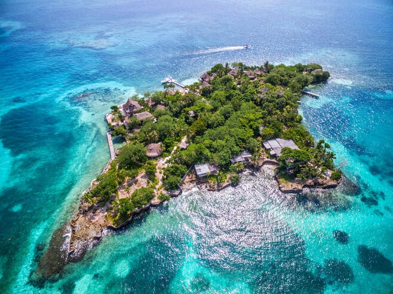
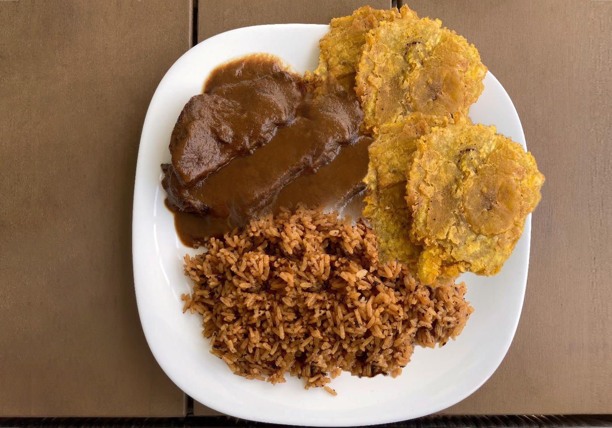
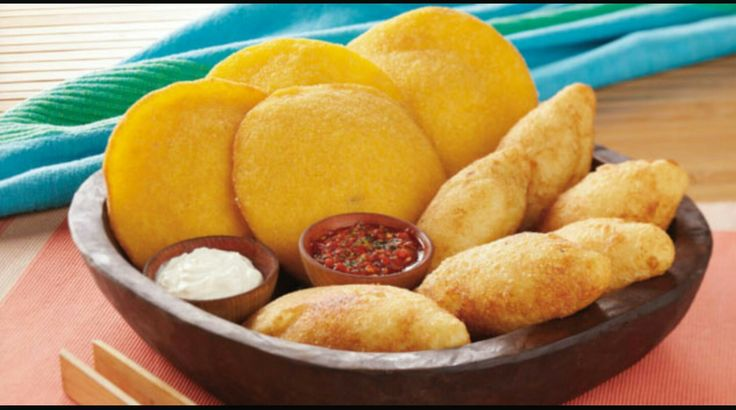
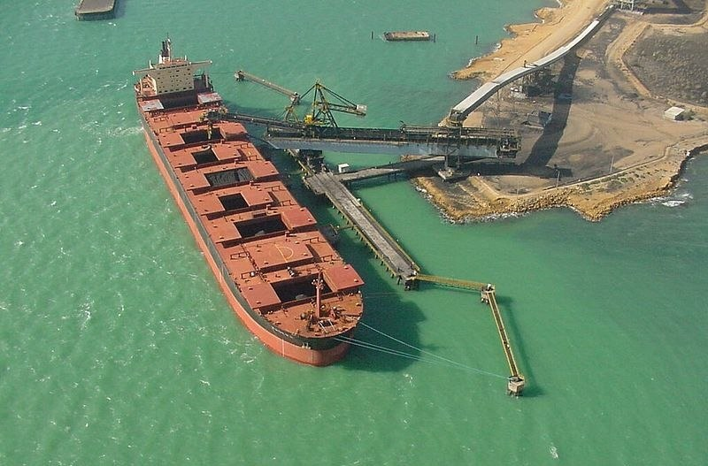
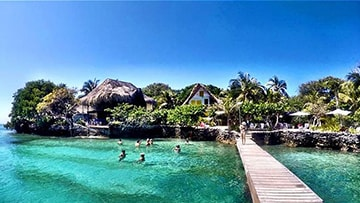
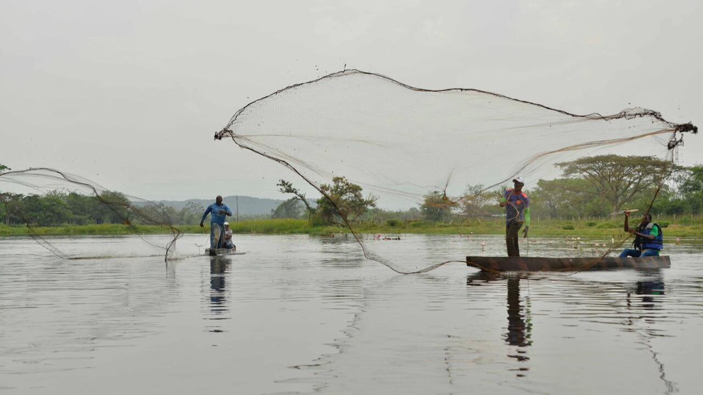

Ciudad Amurallada y Centro Histórico de Cartagena
Patrimonio de la Humanidad, con plazas, murallas, baluartes y arquitectura colonial.
.jpeg)
Castillo de San Felipe de Barajas
Fortaleza militar icónica del Caribe, con túneles y vistas de la bahía.
.jpeg)
Islas del Rosario y Barú (Playa Blanca)
Parque nacional coralino ideal para snorkel, playas de arena blanca y mar turquesa.
Gastronomía típica 🍽️
-
Posta Cartagenera (posta negra)
Carne marinada y caramelizada, servida con arroz con coco y patacones.
 -
Arepa de huevo y carimañolas
Frituras emblemáticas de la costa: arepa rellena de huevo y yuca rellena de carne o queso.
 -
Dulces tradicionales
Enyucado, cocadas, alegrías, titoté y dulces de Semana Santa.
.jpeg)
Área y componentes económicos 💰
-
Industria, logística y puertos
Cartagena es polo industrial y portuario: petroquímico–plástico, fertilizantes, alimentos y bebidas, astilleros y manufacturas, con servicios logísticos y de comercio exterior.
 -
Turismo
Cartagena, Barú, Islas del Rosario y Mompox atraen turismo nacional e internacional todo el año.
 -
Agropecuario y pesca
En Montes de María y zonas ribereñas: maíz, arroz, yuca, palma de aceite, ñame, plátano, cacao; ganadería bovina y pesca continental en la Depresión Momposina.

Datos económicos y ocupacionales con estadísticas 📊
-
Economía
- PIB departamental (2023): ~ $35,7 billones (constantes base 2015).
- Crecimiento 2023: 0,6 % (después de fuerte recuperación pospandemia).
- Principales ramas por valor agregado (2023):
- Administración pública, educación y salud: ≈ $6,4 billones.
- Comercio, transporte, alojamiento y comida: ≈ $5,9 billones.
- Industrias manufactureras: ≈ $5,9 billones.
- Estructura 2022 (participación en VAB): Comercio 20,2 %, Manufacturas 19,5 %, Administración pública 18,0 %, Construcción 8,7 %, Profesionales/científicas 7,4 %.
-
Ocupación y empleo
- Tasa de desempleo (2022): 10,8 % (−2,0 pp frente a 2021).
- Población ocupada (2022): ~ 935 mil personas (↑ 27 mil vs. 2021).
- Ganadería (2023): ~ 1,50 millones de bovinos (≈ 5 % del inventario nacional).
- Principales cultivos (2022 por área): Maíz (28,9 %), Palma de aceite (18,2 %), Arroz (16,4 %), Yuca (15,0 %), Ñame (5,9 %).